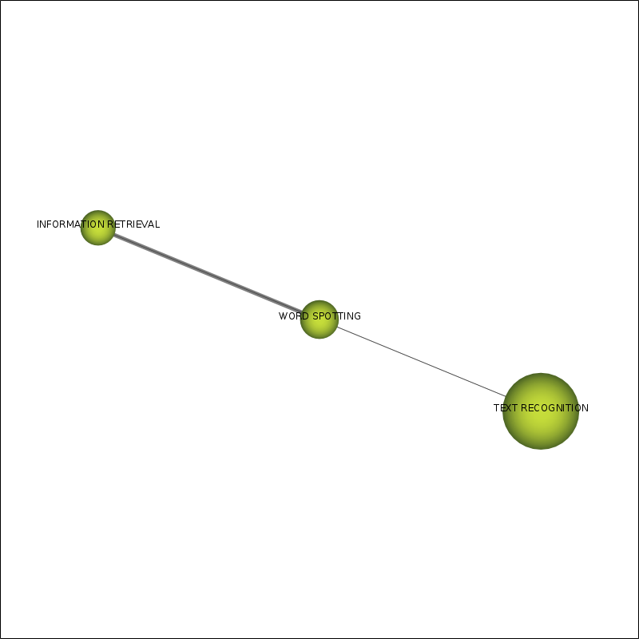

SciMAT report - subperiod 1995-1999 - cluster WORD SPOTTING
Cluster info:
- Name: WORD SPOTTING
- Density: 22.12
- Densisty range: 1
- Centrality: 2.06
- Centrality range: 0.25
Cluster network:

Internal links:
Internal links
| Node A |
Node B |
Weight |
| TEXT RECOGNITION |
WORD SPOTTING |
0.09 |
| TEXT RECOGNITION |
INFORMATION RETRIEVAL |
0.08 |
| WORD SPOTTING |
INFORMATION RETRIEVAL |
0.5 |
External links:
External links
| Node A |
Cluster node A |
Node B |
Cluster node B |
Weight |
| TEXT RECOGNITION |
WORD SPOTTING |
CHARACTER RECOGNITION |
CHARACTER RECOGNITION |
0.03 |
| TEXT RECOGNITION |
WORD SPOTTING |
SEGMENTATION |
NUMERAL RECOGNITION |
0.01 |
| TEXT RECOGNITION |
WORD SPOTTING |
NN |
CHARACTER RECOGNITION |
0.02 |
| TEXT RECOGNITION |
WORD SPOTTING |
HMM |
CHARACTER RECOGNITION |
0.02 |
| TEXT RECOGNITION |
WORD SPOTTING |
WORD RECOGNITION |
CHARACTER RECOGNITION |
0.01 |
| TEXT RECOGNITION |
WORD SPOTTING |
FUZZY LOGIC |
NUMERAL RECOGNITION |
0.03 |
| TEXT RECOGNITION |
WORD SPOTTING |
STRUCTURAL-FEATURES |
CHARACTER RECOGNITION |
0.01 |
| WORD SPOTTING |
WORD SPOTTING |
TEMPLATE MATCHING |
CHARACTER RECOGNITION |
0.08 |
Documents associated with the cluster
coreDocuments (100 first documents with highest impact)
- HAN, K., SETHI, I.K., Handwritten Signature Retrieval And Identification. Pattern Recognition Letters 17:1 83-90 (1996). Times cited: 31
- HAN, K., SETHI, I.K., An Off-line Cursive Handwritten Word Recognition System And Its Application To Legal Amount Interpretation. International Journal Of Pattern Recognition And Artificial Intelligence 11:5 757-769 (1997). Times cited: 4
- KOLCZ, A., ALSPECTOR, J., AUGUSTEIJN, M., CARLSON, R., Visual Keyword Based Word-spotting In Handwritten Documents. --- 3305:null 185-193 (1998). Times cited: 0
unionDocuments (100 first documents with highest impact)
- HUANG, Y.S., SUEN, C.Y., A Method Of Combining Multiple Experts For The Recognition Of Unconstrained Handwritten Numerals. Ieee Transactions On Pattern Analysis And Machine Intelligence 17:1 90-94 (1995). Times cited: 418
- MANMATHA, R., HAN, CHENGFENG, RISEMAN, E.M., Word Spotting: A New Approach To Indexing Handwriting. --- null:null 631-637 (1996). Times cited: 176
- MARTI, U.-V., BUNKE, H., A Full English Sentence Database For Off-line Handwriting Recognition. --- null:null 709-712 (1999). Times cited: 154
- OH, I.I.-S., LEE, J.S., SUEN, C.Y., Analysis Of Class Separation And Combination Of Class-dependent Features For Handwriting Recognition. Ieee Transactions On Pattern Analysis And Machine Intelligence 21:10 1089-1094 (1999). Times cited: 69
- KIM, G., GOVINDARAJU, V., SRIHARI, S.N., An Architecture For Handwritten Text Recognition Systems. International Journal On Document Analysis And Recognition 2:1 37-44 (1999). Times cited: 46
- CHEUNG, K.-W., YEUNG, D.-V., CHIN, R.T., A Bayesian Framework For Deformable Pattern Recognition With Application To Handwritten Character Recognition. Ieee Transactions On Pattern Analysis And Machine Intelligence 20:12 1382-1388 (1998). Times cited: 43
- ABUHAIBA, I.S.I., HOLT, M.J.J., DATTA, S., Recognition Of Off-line Cursive Handwriting. Computer Vision And Image Understanding 71:1 19-38 (1998). Times cited: 35
- KIM, G., GOVINDARAJU, V., Handwritten Phrase Recognition As Applied To Street Name Images. Pattern Recognition 31:1 41-51 (1998). Times cited: 32
- HAN, K., SETHI, I.K., Handwritten Signature Retrieval And Identification. Pattern Recognition Letters 17:1 83-90 (1996). Times cited: 31
- CHIANG, J.-H., A Hybrid Neural Network Model In Handwritten Word Recognition. Neural Networks 11:2 337-346 (1998). Times cited: 29
- LORETTE, G., Handwriting Recognition Or Reading? What Is The Situation At The Dawn Of The 3rd Millenium?. International Journal On Document Analysis And Recognition 2:1 2-12 (1999). Times cited: 26
- HONG, C., LOUDON, G., WU, Y., ZITSERMAN, R., Segmentation And Recognition Of Continuous Handwriting Chinese Text. International Journal Of Pattern Recognition And Artificial Intelligence 12:2 223-231 (1998). Times cited: 19
- LUCAS, S.M., AMIRI, A., Recognition Of Chain-coded Handwritten Character Images With Scanning N-tuple Method. Electronics Letters 31:24 2088-2089 (1995). Times cited: 19
- CHIANG, J.-H., GADER, P., Recognition Of Handprinted Numerals In Visa® Card Application Forms. Machine Vision And Applications 10:3 144-149 (1997). Times cited: 15
- OLIVIER, C., PAQUET, T., AVILA, M., LECOURTIER, Y., Recognition Of Handwritten Words Using Stochastic Models. --- 1:null 19-23 (1995). Times cited: 12
- WANG, J., YAN, H., Mending Broken Handwriting With A Macrostructure Analysis Method To Improve Recognition. Pattern Recognition Letters 20:8 855-864 (1999). Times cited: 11
- NISHIDA, H., An Approach To Integration Of Off-line And On-line Recognition Of Handwriting. Pattern Recognition Letters 16:11 1213-1219 (1995). Times cited: 11
- MADHVANATH, S., GOVINDARAJU, V., Local Reference Lines For Handwritten Phrase Recognition. Pattern Recognition 32:12 2021-2028 (1999). Times cited: 10
- OH, S.-C., HA, J.-Y., KIM, J.H., Context Dependent Search In Interconnected Hidden Markov Model For Unconstrained Handwriting Recognition. Pattern Recognition 28:11 1693-1704 (1995). Times cited: 8
- LAZZERINI, BEATRICE, MARCELLONI, F., REYNERI, L.M., Beatrix: A Self-learning System For Off-line Recognition Of Handwritten Texts. Pattern Recognition Letters 18:6 583-594 (1997). Times cited: 6
- CLERGEAU-TOURNEMIRE, S., PLAMONDON, R., Integration Of Lexical And Syntactical Knowledge In A Handwriting-recognition System. Machine Vision And Applications 8:4 249-259 (1995). Times cited: 5
- HAN, K., SETHI, I.K., An Off-line Cursive Handwritten Word Recognition System And Its Application To Legal Amount Interpretation. International Journal Of Pattern Recognition And Artificial Intelligence 11:5 757-769 (1997). Times cited: 4
- PETERS, L., LEJA, C., MALAVIYA, A., A Fuzzy Statistical Rule Generation Method For Handwriting Recognition. Expert Systems 15:1 48-56 (1998). Times cited: 2
- KOLCZ, A., ALSPECTOR, J., AUGUSTEIJN, M., CARLSON, R., Visual Keyword Based Word-spotting In Handwritten Documents. --- 3305:null 185-193 (1998). Times cited: 0
- FU, H.-C., CHEN, M.-Y., CHIANG, C.-C., Handwritten Recognition For The Multimedia Humanmachine Interface. Multimedia Technology For Applications null:null 490-526 (1998). Times cited: 0
- GADER, P., MOHAMED, M.A., KELLER, J.M., Applications Of Fuzzy Integrals To Handwriting Recognition. --- 2493:null 102-113 (1995). Times cited: 0
- KIMACHI, M., TESHIGAWARA, M., KANAYAMA, K., Application Of Fuzzy Theory To Handwritten Character Recognition. Systems And Computers In Japan 26:2 36-44 (1995). Times cited: 0